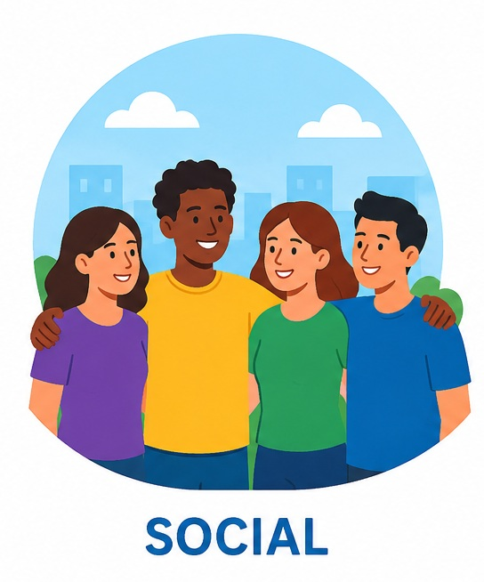

Encontre as combinações entre os campos da abordagem ampliada e os fatores determinantes da dor em pacientes internados na UTI. Você tem 120 segundos para finalizar.
Memorize a localização dos cards dos campos de abordagem da dor (Biológico, Emocional e Social) e dos fatores biopsicossociais correspondentes. Seu objetivo é encontrar os pares corretos: não importa se você localizar primeiro o card do campo ou o do fator, o importante é associá-los corretamente.
Exemplos:

Se surgir alguma dúvida sobre a relação entre um fator clínico e seu respectivo campo biopsicossocial, consulte os Capítulos 1 e 2 do guia.
Boa sorte!